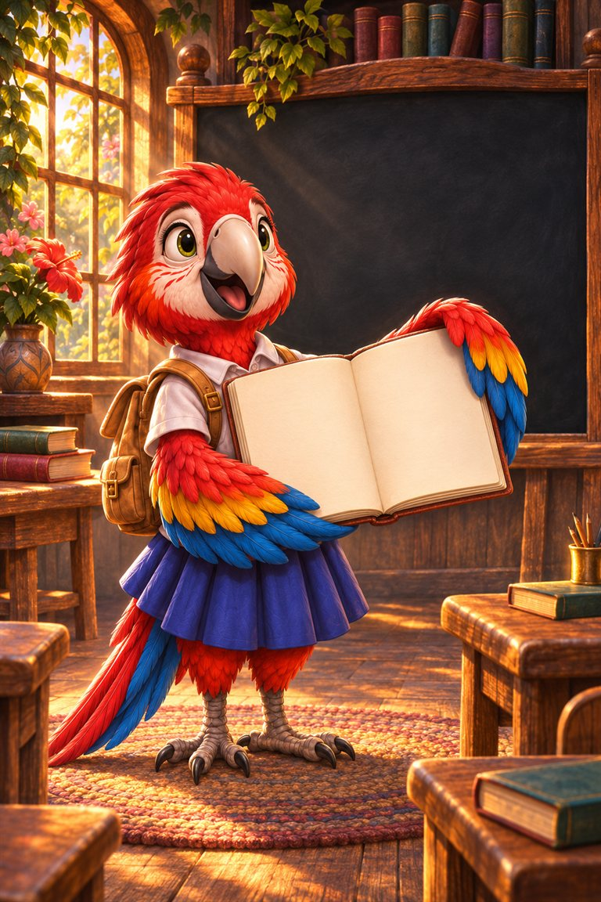
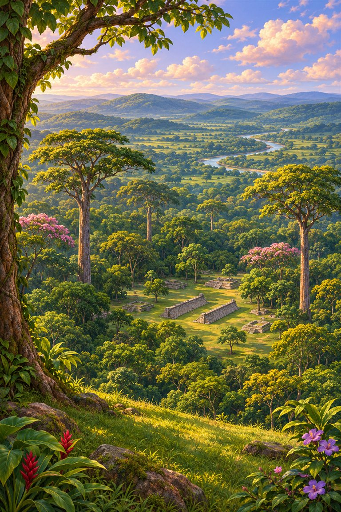
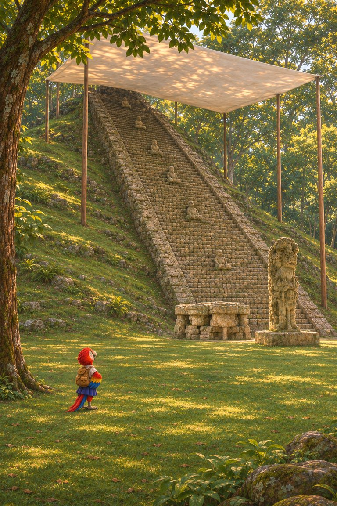
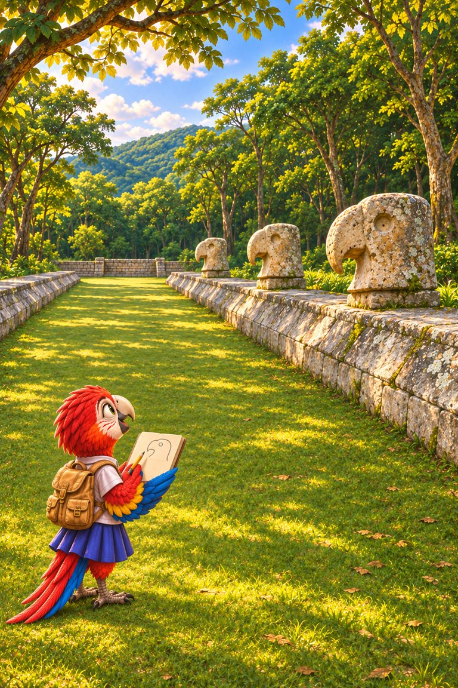
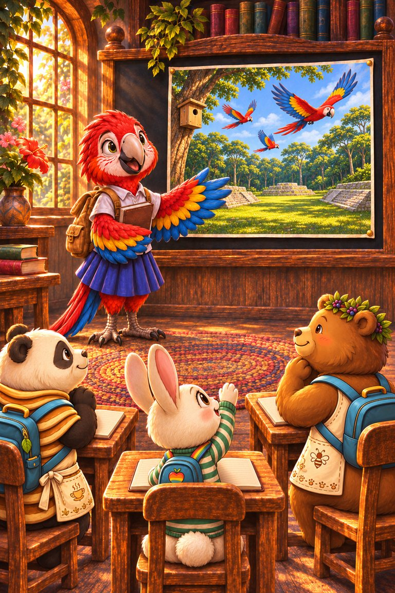

Page 1 of 6
My name is Rosa, and I am an exchange student from Honduras. My teacher asked me to tell the class about my home. I chose Copán, because its history and its birds belong together.
A six-page class report on Copán, Honduras: a great Maya city, its stone stairway of glyphs, and the scarlet macaws that came back.
Words to talk about first: exchange student, border, glyph, identity, protect.
7 printed pages · 1.7 MB · A4 or US Letter. Download PDF · Open PDF to printOpens in a new tab. Use the PDF viewer's Print control. To use less ink, read online and choose only the questions on page 7 in Print.

My name is Rosa, and I am an exchange student from Honduras. My teacher asked me to tell the class about my home. I chose Copán, because its history and its birds belong together.

Copán is in western Honduras, close to the border with Guatemala. More than a thousand years ago, it was a great Maya city. In 1980, it became a UNESCO World Heritage Site, so people around the world now help to protect it.

The most famous place in Copán is the Hieroglyphic Stairway. Maya carvers covered its stone steps with more than a thousand glyphs. It is the longest Maya text that we know. Reading it is like opening a history book made of stone.

Macaws mattered to the Maya of Copán. Carvers shaped macaw heads for the ball court, and the name of the city’s first ruler includes the word for macaw. These birds were part of the city’s identity.
Scarlet macaws nest in holes high in tall trees. A female usually lays two to four eggs, and the chicks hatch blind and without feathers. Fruit and nuts are the main foods of these birds, and they can live for decades.

Scarlet macaws almost disappeared from the valley. Then people began to build nests, watch the chicks and teach visitors. Now macaws fly over Copán again. My report has one question for you: what is worth protecting where you live?
More than a thousand carved glyphs.
They built nests, watched the chicks and taught visitors.
The Maya carved macaws and valued them, and macaws live in the valley today.
Facts checked against Britannica, Maya Ruins: the Copán ball court, Animal Diversity Web, Smithsonian Magazine.
For younger readers, the same trip is told as a story in Polly Roger and the Red Wings of Copán.
Related read-together bookPolly Roger and the Red Wings of Copán
Explore a number story · read togetherCenti‑Peed and the Below‑Zero Burrow
Know a family or class who would enjoy it?